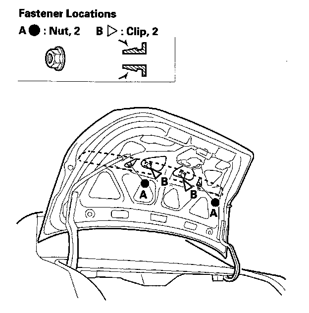
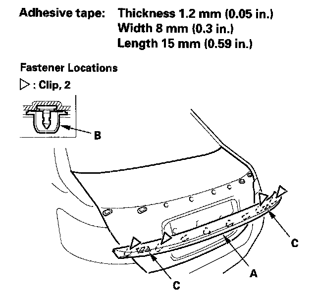
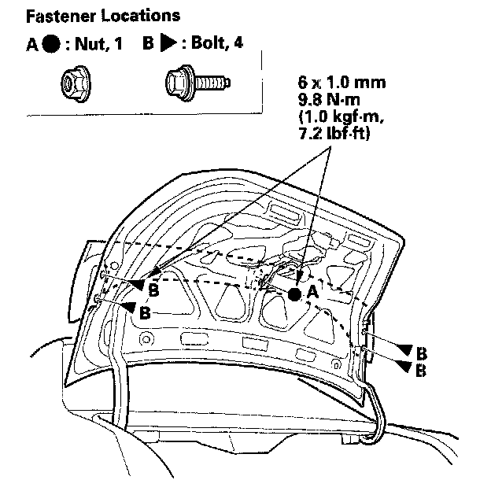
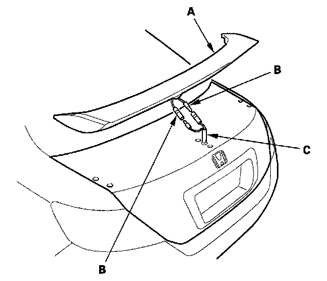
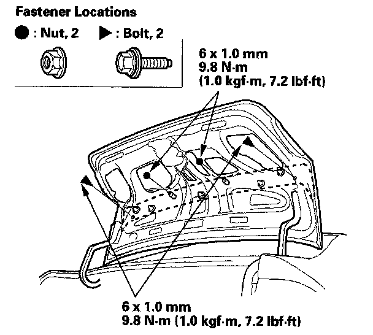
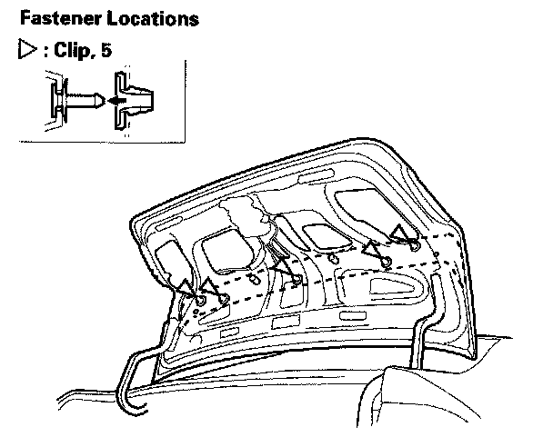
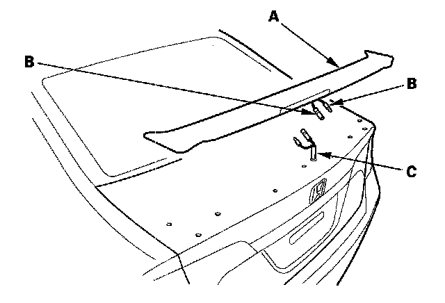

Spoilers, Flaps, and Air Dams: Service and Repair
Trunk Lid Spoiler Replacement2-door (Except Si model)
NOTE:
- Put on gloves to protect your hands.
- Take care not to scratch the trunk lid.

1. Open the trunk lid, and remove the nuts (A) from inside the trunk lid, and push out the clips (B).

2. Close the trunk lid. Pull the trunk lid spoiler (A) up to release the clips from the grommets (B) on the trunk lid while removing the adhesive tape (C), then remove the spoiler.
3. Install the spoiler in the reverse order of removal. Check if the clips are damaged or stress-whitened, and if necessary, replace them with new ones.
2-door (Si model)
NOTE:
- Put on gloves to protect your hands.
- Take care not to scratch the trunk lid.

1. Open the trunk lid, and remove the nut (A) and bolts (B) from inside the trunk lid.

2. Close the trunk lid. While lifting the trunk lid spoiler (A) up, disconnect the high mount brake light terminals (B) from the spoiler subharness (C), then remove the spoiler.
3. Install the spoiler in the reverse order of removal, and make sure the high mount brake light terminals are plugged in properly.
4-door (Si model)
NOTE:
- Put on gloves to protect your hands.
- Take care not to scratch the trunk lid.

1. Open the trunk lid, and remove the nuts from inside the trunk lid.

2. Push out the clips from inside the trunk lid.

3. Close the trunk lid. While lifting the trunk lid spoiler (A) up, disconnect the high mount brake light terminals (B) from the spoiler subharness (C), then remove the spoiler.
4. Install the spoiler in the reverse order of removal, and make sure the high mount brake light terminals are plugged in properly.